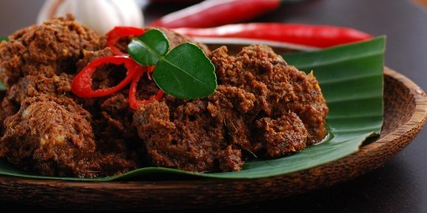

Resep-resep

Rendang khas Padang
Masakan daging yang dimasak dalam santan kelapa dan bumbu rempah-rempah kaya.
Read Full Recipe

Sate kambing
Disajikan dengan sambal kacang yang gurih atau sambal kecap yang manis.
Read Full Recipe